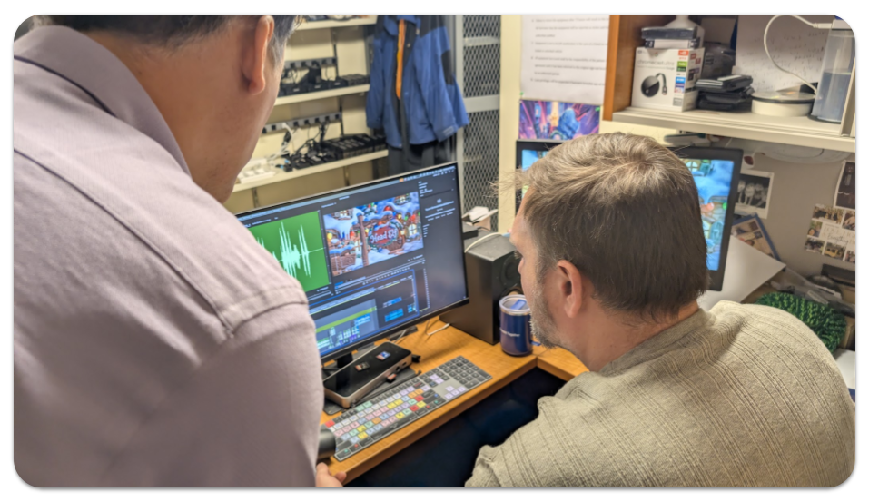
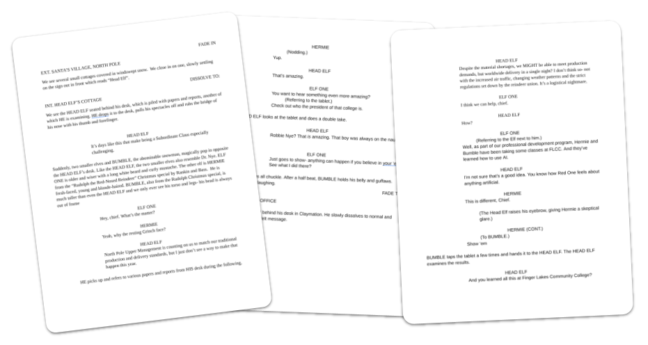
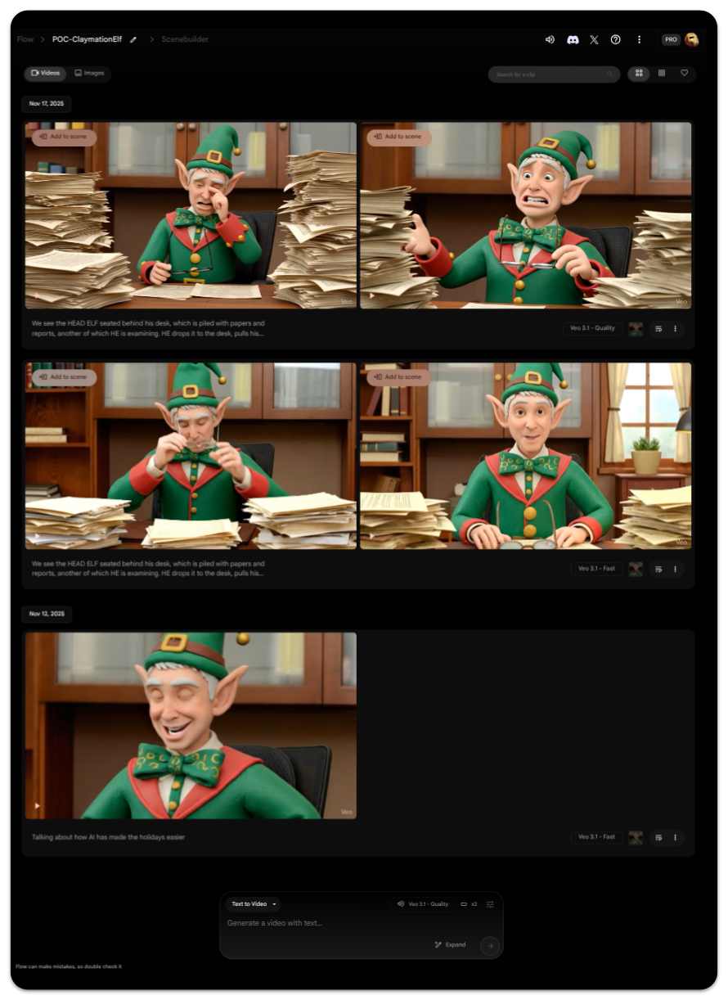
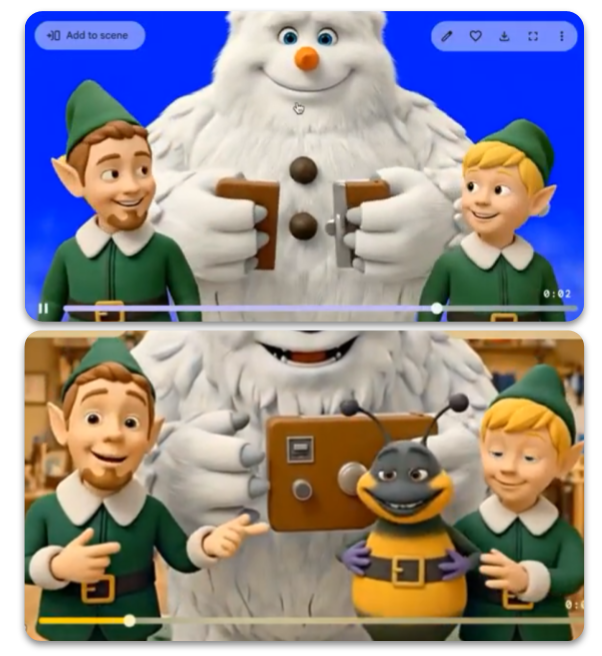
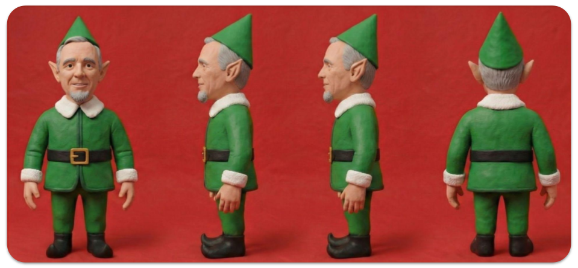
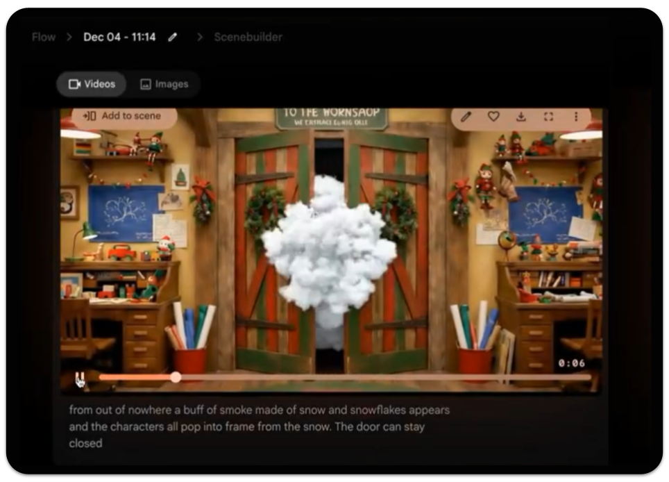
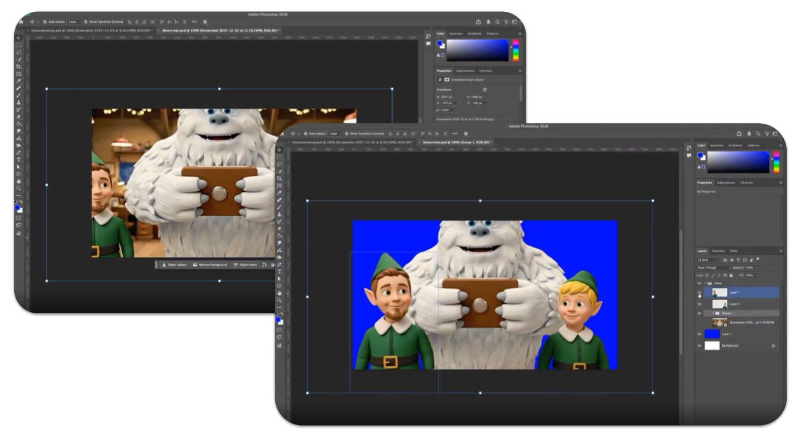

At first glance, this year's holiday video feels almost effortless. The characters are charming, the style is nostalgic, and the whole thing carries the warmth of classic claymation holiday specials many of us grew up with. It's easy to watch it and think, "Wow! I can't believe AI did this."
In an important way, that's true. But the real story is much more human.
It began when President Nye expressed interest in including an AI-generated element in his annual holiday greeting to the college community. Not as a novelty, but as a genuine creative experiment. That single question - could AI be part of this year's message? - set everything else in motion.
From there, Jim Perri (Visual and Performing Arts), who brings a rich background in screenwriting and theatrical production, wrote a highly descriptive screenplay. This turned out to be one of the most important decisions in the entire process! The script went far beyond dialogue; it described environments, actions, pacing, transitions, and visual intent. Those non-dialogue details mattered immensely. AI video tools don't just respond to what characters say - they respond to what's happening. Jim's screenplay gave the AI something concrete to work with, shaping scenes in ways a dialogue-only script never could.

The first step in any video production is a well-crafted script. Jim's screenplay was very descriptive (which was a great help when working with AI).With a script in hand, the team needed to answer a basic question: was this even feasible? Using Nano Banana, an image of President Nye was transformed into a whimsical, claymation-style "head elf." That single image immediately captured the nostalgic stop-motion feel everyone hoped for.
Prompt: Google Gemini 3 Pro using Nano BananaTransform into a claymation elf
From there, Google Veo3 and Google Flow were used to generate a few short video segments as a proof of concept. These early clips weren't polished, but they worked well enough to show the idea had legs.

Prompt: Google Veo3 in Google FlowWe see the HEAD ELF seated behind his desk, which is piled with papers and reports, another of which HE is examining. He drops it to the desk, pulls his spectacles off and rubs the bridge of his nose with his thumb and forefinger. HEAD ELF says, "It's days like this that make being a Subordinate Claus especially challenging."
High off the fumes of a successful proof of concept, it was off to the races with Paul Engin and Jeff Kidd (Visual and Performing Arts) - the FLCC experts at video production.
What followed looked far less like "prompt and done" and far more like a traditional animation and video production pipeline - just with AI woven throughout. However, as production ramped up, the challenges began to reveal themselves.
One of the first hurdles was "character consistency". AI video tools generate short clips, often only a few seconds long, and across multiple clips the look of individual characters tend to drift. Facial proportions shift. Eyes change. Small details (like glasses) appear and disappear. Characters changed radically (the Yeti had a carrot nose at one point and AI injected a bumble bee at another point):

It was evident early on that character consistency was going to bee a problem.To solve this, Paul relied on a classic animation technique: character sheets. Multiple reference images of each character were created and reused to anchor the AI visually and keep characters recognizable from scene to scene. It was a decades-old practice paired with modern tools.

Prompt: Google Gemini 3 Pro using Nano BananaCan you create a character turnaround from the attached image
Other challenges were more stubborn. At one point, characters needed to appear in a room without opening a door. No matter how clearly Paul crafted the instructions, the AI insisted on opening the door.

Prompt: Google Veo3 in Google FlowFrom out of nowhere a buff of smoke made of snow and snowflakes appears and the characters all pop into frame from the snow. The door can stay closed.The door did not, in fact, stay closed.
The workaround wasn't a better prompt - it was an old filmmaking trick. Using Photoshop, Paul took a still of the elves and put them in front of a "blue screen" and then had AI generate their entrance in a puff of smoke. Paul then had to manually composite them into the scene using Adobe After Effects and Premiere. By removing the door from the AI's "world," the problem disappeared.

Putting the characters on a blue screen was the only way to close the issue of the door.Directing performance proved just as tricky. Getting characters to look in the right direction, react naturally, or take turns speaking reliably was difficult. AI struggled with multi-character dialogue, often moving the wrong mouths at the wrong time or having everyone speak at once. At other times, the voice of one character would change to a different voice. After wrestling with AI to solve the problem of multiple speakers (with careful prompting), another issue surfaced - the video was too long.
Jeff sped up the video to 1.25 times the normal speed to tighten the length of the video. Of course, the speech that AI had generated with the videos was now out of whack - but that is okay because Jeff and Paul knew that they would have to record all the voices with voice actors anyhow. The dialogue was re-recorded (by voice actors at the College) and synced by hand, a process known as ADR, giving full control over timing, clarity, and tone.
Audio presented its own set of surprises. Each AI-generated clip came with different background music, sound effects, and volume levels. Rather than accept that inconsistency, voice tracks were cleaned using AI audio tool ElevenLabs and music was generated separately and applied consistently across the entire video. AI helped here - but only after people decided what the soundscape should feel like.
Throughout the process, the pattern repeated itself. AI would get the team 80 or 90 percent of the way there, and then niche human experience would take over. Framing was adjusted. Scenes were cropped. Timing was refined. Visuals were composited and polished using traditional editing tools. What made the video work wasn't that AI was flawless. It was that every time it wasn't, people knew what to do next. They had the vision from the beginning and they had the experience to realize that vision when AI had hit its limits.
In the end, this video wasn't made by AI alone. It was made by writers, animators, editors, and sound designers using AI as an accelerator rather than an autopilot. AI made something like this possible on a tight timeline. Human skill made it coherent, expressive, and finished.
If this behind-the-scenes look changes how you think about AI, that's a good thing. The technology is impressive - but it shines brightest when paired with experience, judgment, and care. And perhaps the most exciting part is this: this is the worst these tools will ever be.
Happy holidays from all of us at FLCC, and thanks for taking a moment to look behind the curtain.